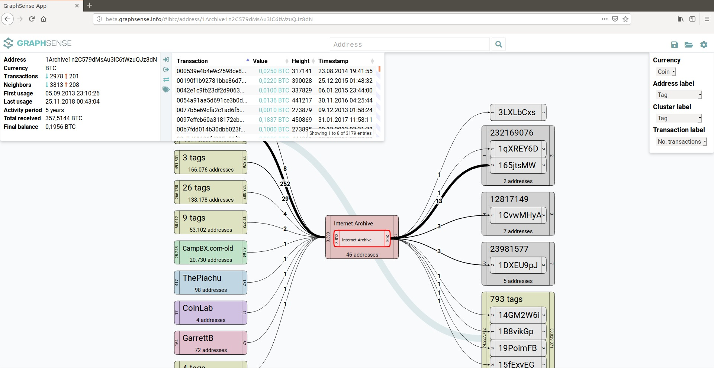

GraphSense is an open source platform for analyzing cryptocurrencies such as Bitcoin.
Address Clustering: partition the set of addresses observed in a cryptocurrency ecosystem into maximal subsets (clusters) that are likely to be controlled by the same real-world entity.
Micro- and Macroscopic Analysis: inspect main cryptocurrency entities (block, transaction, address) and compute summary statistics over the entire blockchain.
Network Perspective: apply a network-centric perspective and traverse currency flows between addresses and clusters.
Horizontal Scalability: cryptocurrency blockchains are growing and new currencies appear on the horizon. To make GraphSense future-proof, it is built on Apache Spark and Cassandra for horizontal scalability.
GraphSense is built on scalable and distributed cluster technology and therefore requires a number of software components. They must be setup and/or executed in the following order:
bitcoin-client: a Docker container encapsuling the most-recent Bitcoin client version
datafeed: a component for ingesting raw blockchain data and exchange rates into Cassandra
transformation: a Spark pipeline for computing statistics and network representations from raw blockchain data stored in Cassandra.
rest-api: an API for retrieving data from the underlying Cassandra store
dashboard: a user-interface allowing search, inspection, and traversal of cryptocurrency entities
The following example shows details about an example Bitcoin address.

Some more technical details about GraphSense are described here; please cite as:
@inproceedings{Haslhofer:2016a,
title={O Bitcoin Where Art Thou? Insight into Large-Scale Transaction Graphs.},
author={Haslhofer, Bernhard and Karl, Roman and Filtz, Erwin},
booktitle={SEMANTiCS (Posters, Demos)},
year={2016}
}
So far, GraphSense has been used for computing statistics in the following scientific papers:
Filtz, E., Polleres, A., Karl, R., Haslhofer, B.: Evolution of the Bitcoin Address Graph - An Exploratory Longitudinal Study. International Data Science Conference (DSC 2017), Salzburg, Austria, 2017. (pdf)